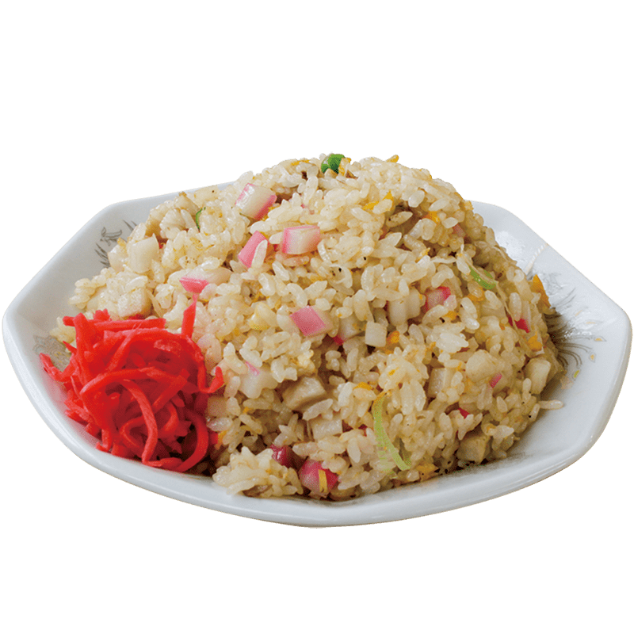
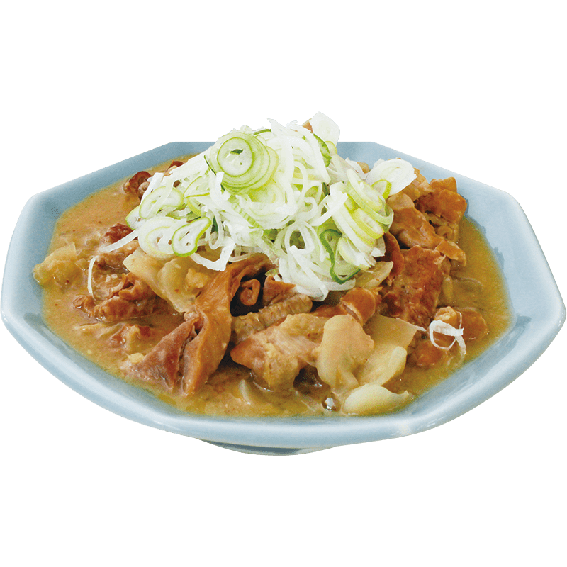
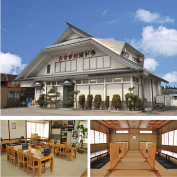

河ドラのこだわり
KAWADORA POLICY
当店では、お客様に
「どうしてこんなに盛りがいいのですか？」
と聞かれることが多いですが、
それは、河ドラが創業した昭和42年７月に遡ります。
今と違って高速道路などが整備されていなかった時代、
秋田市やその先からの米や果物といった物流は、
国道13号線を通り関東地方へ運ばれており、
河ドラはトラックの長距離ドライバー達で賑わっていました。
河ドラ創業からのポリシーは、
『ここで飯を食べたドライバーを、
東京まで腹をすかさずに到着させること』。
そんな想いが、今なお受け継がれているのです。
ということで、兎にも角にも、合言葉は…
「腹が減ったら、河ドラへ」。
河ドラのNEWS
KAWADORA NEWS
-
2020.0521
2号店『河ドラ追分店』オープンしました。 -
2019.07.30
『第13回河ドラ生ビール祭り』を開催しました。 -
2018.09.10
『第22回河ドラグループゴルフ大会』を開催しました。 -
2018.08.03
『第12回河ドラ生ビール祭り』開催の模様を追加しました。 -
2018.04.06
『創業50周年記念祝賀会』を開催しました。 -
2017.09.15
『第21回河ドラグループゴルフ大会』を開催しました。 -
2017.08.29
『第11回河ドラ生ビール祭り』開催の模様を追加しました。 -
2017.07.26
仕出しメニューを追加しました。 -
2017.02.28
テイクアウトメニューを追加しました。 -
2016.12.26
当店のホームページがリニューアルしました。

店舗のご案内
SHOP INFORMATION
| 河辺ドライブイン 本店 | |
|---|---|
| 住所 | ：秋田市河辺和田字坂本南262 |
| TEL | ：018-882-2361 |
| 営業時間 | ：11:00〜19:50(LO) |
| 定休日 | ：毎週水曜日 |
| 座席 | ：70席 |
| 交通機関 | ：車／秋田自動車道秋田南ICより10分 |

| お食事処河ドラ 追分店 | |
|---|---|
| 住所 | ：秋田市下新城中野琵琶沼297-3 |
| 営業時間 | ：11:00〜15:00 |
| 定休日 | ：毎週水曜日 |
| 座席 | ：25席 |
| 交通機関 | ：車／秋田自動車道秋田北ICより15分 |